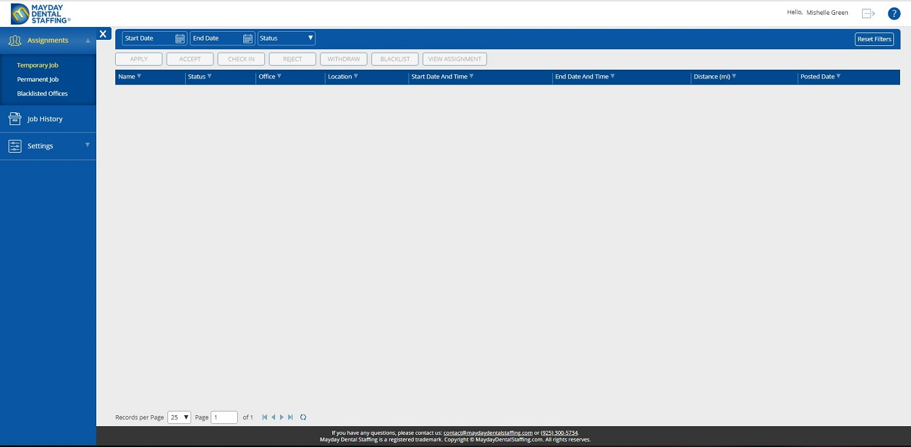

Attention:
- A professional should add at least one
Specialty.
- A professional should add the requied valid manadatory certificates.
- The provided certificates should be reviewed and approved by Mayday Dental
Staffing representative before a professional is able to search for a
job.
- A professional should specify the preferences for a job.
General considerations
-
A professional or user is able to observe information about available
assignments according to one’s Profile parameters specified at the
Settings section.
-
A user is able to change his personal preferences in 7.1 General.
-
If a user is in banned list of any dental office, one cannot see postings from
that office.
-
A professional is able to observe assignments based on preferences set at the
7.1 General, approved and valid
certificates.
Application Rules.
Different posting typesA doctor may require a
professional in a different timetable. For this purpose, an application supports
three options to select posting date and time:
- Simple. The most popular type of the posting in the
application. Time of the beginning and ending the job is the same, if a
posting lasts more than one day. Usually, this type of posting is used if a
doctor needs a professional for one day or for a number of days if start and
end of work is the same for all days.
- Weekly. A doctor specifies required a day of the week
based on a week schedule. A doctor specifies start and end time of posting
for every day of a week. Usually, weekly posting is used if a doctor needs a
professional for some days of the week for one or more weeks and start and
end time of work can be different from day to day.
- Complex. Usually, complex posting is used if a doctor needs a
professional for more than one day and simple and weekly patterns cannot be
applied
Initial view for temporary assignments. No assignments are available
yet:

Attention: Please note that if a dental office asks you to work extra
days not published in the assignment, you are obligated to notify Mayday Dental
Staffing immediately of such extensions on days whether temporary or permanently
by calling (925) 300-5734 or by email: contact@maydaydentalstaffing.com.